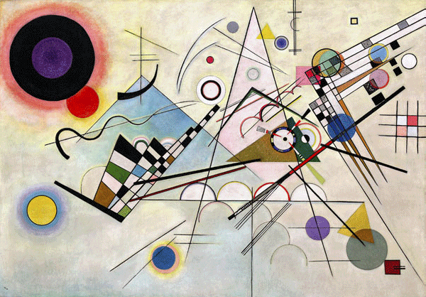

A member of the Blue Rider group, this Russian muse laid the foundations for abstract painting. Despite her soft, musical rhythmic style, she is as strict as a spear. She is actually an elite graduate of the Faculty of Law at Moscow University.
Russian Empire
"Composition VIII"
"Improvisation Klamm"
"The Blue Rider" etc.

This work is considered a masterpiece among the ten "Composition" series, which were inspired by music (composition).
It was created while he was teaching at the Bauhaus, an art school in the Weimar Republic (now Germany). It features more geometric shapes than the other series, and the balance of the dancing shapes against the white background is pleasing.
Year
1923
Medium
Oil on canvas
Dimension
140cm x 201cm
Collection
Guggenheim Museum (USA)
A 20th-century painter of Russian origin, known as the founder of abstract painting. His childhood musical education nurtured his sensibility, leading him to explore the relationship between music and painting.
He unveiled his first abstract paintings in the early 20th century. These abstract works, rendered rhythmically like music, were called “hot abstraction.”
He also served as an instructor at the Bauhaus art school in Germany, leaving behind numerous artistic theories that connect to contemporary art today. He is a master of the art world.
Wassily Wassilyevich Kandinsky
December 4, 1866
December 13, 1944(aged 78)